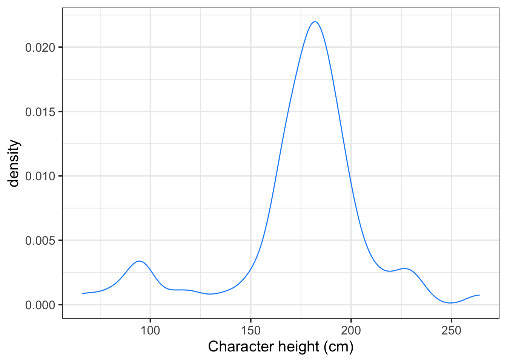
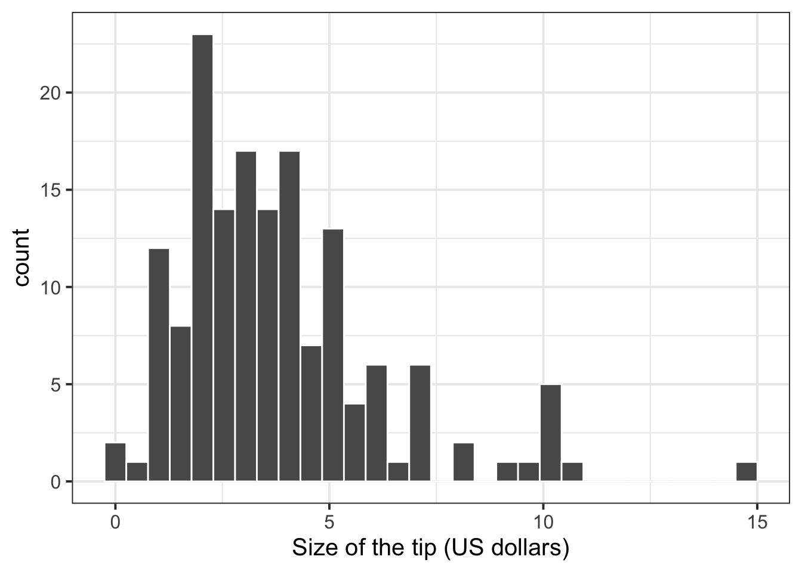

Rows: 87
Columns: 14
$ name <chr> "Luke Skywalker", "C-3PO", "R2-D2", "Darth Vader", "Leia Or…
$ height <int> 172, 167, 96, 202, 150, 178, 165, 97, 183, 182, 188, 180, 2…
$ mass <dbl> 77.0, 75.0, 32.0, 136.0, 49.0, 120.0, 75.0, 32.0, 84.0, 77.…
$ hair_color <chr> "blond", NA, NA, "none", "brown", "brown, grey", "brown", N…
$ skin_color <chr> "fair", "gold", "white, blue", "white", "light", "light", "…
$ eye_color <chr> "blue", "yellow", "red", "yellow", "brown", "blue", "blue",…
$ birth_year <dbl> 19.0, 112.0, 33.0, 41.9, 19.0, 52.0, 47.0, NA, 24.0, 57.0, …
$ sex <chr> "male", "none", "none", "male", "female", "male", "female",…
$ gender <chr> "masculine", "masculine", "masculine", "masculine", "femini…
$ homeworld <chr> "Tatooine", "Tatooine", "Naboo", "Tatooine", "Alderaan", "T…
$ species <chr> "Human", "Droid", "Droid", "Human", "Human", "Human", "Huma…
$ films <list> <"A New Hope", "The Empire Strikes Back", "Return of the J…
$ vehicles <list> <"Snowspeeder", "Imperial Speeder Bike">, <>, <>, <>, "Imp…
$ starships <list> <"X-wing", "Imperial shuttle">, <>, <>, "TIE Advanced x1",…Numeric data
Semester 1 - Week 3
1 Formative report A
Instructions and data were released in week 1.
1.1 Tasks
For formative report A, you will be asked to perform the following tasks, each related to a week of teaching in this course.
This week’s task is highlighted in bold below. Please only focus on completing that task this week. In the next section, you will also find guided sub-steps you may want to consider to complete this week’s task.
A1) Read the data into R, inspect it, and write a concise introduction to the data and its structure
A2) Display and describe the categorical variables
A3) Display and describe six numerical variables of your choice
A4) Display and describe a relationship of interest between two or three variables of your choice
A5) Finish the report write-up, knit to PDF, and submit the PDF for formative feedback
1.2 A3 sub-tasks
This week you will only focus on task A3. Below there are some guided sub-steps you may want to consider to complete task A3.
Tip
To see the hints, hover your cursor on the superscript numbers.
- Reopen last week’s Rmd file, as you will continue last week’s work and build on it.1
Visualising the distribution of numerical data
We display numeric variables with histograms, density plots, or boxplots. Respectively, these use the function geom_histogram(), geom_density(), or geom_boxplot() from ggplot2, which is a package automatically loaded when you load tidyverse via library(tidverse). For illustration purposes, we will use the starwars dataset from tidyverse, containing information on Starwars characters.
The distribution of the character heights (cm) can be displayed with a histogram:
ggplot(starwars, aes(x = height)) +
geom_histogram(color = 'gray', fill = 'lightblue') +
labs(x = "Character height (cm)", y = "Frequency")
The distribution of the character heights (cm) can be displayed with a density plot:
ggplot(starwars, aes(x = height)) +
geom_density(color = 'dodgerblue') +
labs(x = "Character height (cm)")
The distribution of the character heights (cm) can be displayed with a box plot:
ggplot(starwars, aes(x = height)) +
geom_boxplot() +
labs(x = "Character height (cm)")
-
Create six plots, each displaying the distribution of:2
- Production budgets
- Audience scores
- Rotten Tomatoes ratings
- World gross income
- Foreign gross income
- Year of movie release
- Arrange the above plots as a single figure comprising 2 by 3 panels3
Compute the mean and standard deviation of a variable
Consider again the starwars dataset. The mean and SD of the height variable can be computed as:
starwars |>
summarise(M = mean(height, na.rm = TRUE),
SD = sd(height, na.rm = TRUE)) |>
round(digits = 2)# A tibble: 1 × 2
M SD
<dbl> <dbl>
1 175. 34.8To make a nice table for the PDF document, you can use the kbl() function from the kableExtra package:
| M | SD |
|---|---|
| 174.6 | 34.77 |
- Create a table of descriptive statistics that summarises the production budgets using the mean and standard deviation.
In the next step you will learn how to create a table for all variables at once, so this step can be excluded from your report, but it’s important to know how to manually compute it too.4
Table of descriptive statistics
Using summarise for more than a couple of variables would make the job very tedious and long. There is a shortcut, which uses the describe function from the psych package.
The following code creates a table of descriptive statistics (via the describe function from the psych package) and ensures the table is in proper format by using the kbl function from the kableExtra package.
| vars | n | mean | sd | median | trimmed | mad | min | max | range | skew | kurtosis | se | |
|---|---|---|---|---|---|---|---|---|---|---|---|---|---|
| height | 1 | 81 | 174.60 | 34.77 | 180 | 178.48 | 17.79 | 66 | 264 | 198 | -1.05 | 1.80 | 3.86 |
| mass | 2 | 59 | 97.31 | 169.46 | 79 | 75.44 | 16.31 | 15 | 1358 | 1343 | 6.97 | 48.93 | 22.06 |
To only show the columns n, mean, sd, median you can use:
| n | mean | sd | median | |
|---|---|---|---|---|
| height | 81 | 174.60 | 34.77 | 180 |
| mass | 59 | 97.31 | 169.46 | 79 |
- Create a table of descriptive statistics that summarises (using the mean and standard deviation) the six numeric variables which you plotted above. 5
- Write up a summary of what you have reported in the plots and/or tables, using proper rounding to 2 decimal places and avoiding any reference to R code or functions.
Hiding R code or ouput
To not show the code of an R code chunk, and only show the output, write:
```{r, echo=FALSE}
# code goes here
```To show the code of an R code chunk, but hide the output, write:
```{r, results='hide'}
# code goes here
```To hide both code and output of an R code chunk, write:
```{r, include=FALSE}
# code goes here
```- Make sure that all R code and output is not visible in the PDF report. The PDF report should only include text, tables, and plots.
2 Worked example
Consider the dataset available at https://uoepsy.github.io/data/RestaurantTips.csv, containing 157 observations on the following 7 variables:
| Variable Name | Description |
|---|---|
| Bill | Size of the bill (in dollars) |
| Tip | Size of the tip (in dollars) |
| Credit | Paid with a credit card? n or y |
| Guests | Number of people in the group |
| Day | Day of the week: m=Monday, t=Tuesday, w=Wednesday, th=Thursday, or f=Friday |
| Server | Code for specific waiter/waitress: A, B, or C |
| PctTip | Tip as a percentage of the bill |
These data were collected by the owner of a bistro in the US, who was interested in understanding the tipping patterns of their customers. The data are adapted from Lock et al. (2020).
# A tibble: 6 × 7
Bill Tip Credit Guests Day Server PctTip
<dbl> <dbl> <chr> <dbl> <chr> <chr> <dbl>
1 23.7 10 n 2 f A 42.2
2 36.1 7 n 3 f B 19.4
3 32.0 5.01 y 2 f A 15.7
4 17.4 3.61 y 2 f B 20.8
5 15.4 3 n 2 f B 19.5
6 18.6 2.5 n 2 f A 13.4glimpse(tips)Rows: 157
Columns: 7
$ Bill <dbl> 23.70, 36.11, 31.99, 17.39, 15.41, 18.62, 21.56, 19.58, 23.59, …
$ Tip <dbl> 10.00, 7.00, 5.01, 3.61, 3.00, 2.50, 3.44, 2.42, 3.00, 2.00, 1.…
$ Credit <chr> "n", "n", "y", "y", "n", "n", "n", "n", "n", "n", "n", "n", "n"…
$ Guests <dbl> 2, 3, 2, 2, 2, 2, 2, 2, 2, 2, 1, 1, 1, 2, 2, 3, 2, 2, 1, 5, 5, …
$ Day <chr> "f", "f", "f", "f", "f", "f", "f", "f", "f", "f", "f", "f", "f"…
$ Server <chr> "A", "B", "A", "B", "B", "A", "B", "A", "A", "B", "B", "A", "B"…
$ PctTip <dbl> 42.2, 19.4, 15.7, 20.8, 19.5, 13.4, 16.0, 12.4, 12.7, 10.7, 11.…tips$Day <- factor(tips$Day,
levels = c("m", "t", "w", "th", "f"),
labels = c("Monday", "Tuesday", "Wednesday", "Thursday", "Friday"))
tips$Credit <- factor(tips$Credit,
levels = c("n", "y"),
labels = c("No", "Yes"))
tips$Server <- factor(tips$Server)
glimpse(tips)Rows: 157
Columns: 7
$ Bill <dbl> 23.70, 36.11, 31.99, 17.39, 15.41, 18.62, 21.56, 19.58, 23.59, …
$ Tip <dbl> 10.00, 7.00, 5.01, 3.61, 3.00, 2.50, 3.44, 2.42, 3.00, 2.00, 1.…
$ Credit <fct> No, No, Yes, Yes, No, No, No, No, No, No, No, No, No, No, No, N…
$ Guests <dbl> 2, 3, 2, 2, 2, 2, 2, 2, 2, 2, 1, 1, 1, 2, 2, 3, 2, 2, 1, 5, 5, …
$ Day <fct> Friday, Friday, Friday, Friday, Friday, Friday, Friday, Friday,…
$ Server <fct> A, B, A, B, B, A, B, A, A, B, B, A, B, B, B, B, C, C, C, C, C, …
$ PctTip <dbl> 42.2, 19.4, 15.7, 20.8, 19.5, 13.4, 16.0, 12.4, 12.7, 10.7, 11.…We can create a histogram of tips via:
ggplot(tips, aes(x = Tip)) +
geom_histogram(color = 'white') +
labs(x = "Size of the tip (US dollars)")
We can create a single figure with the distribution of all numeric variables by using the patchwork package:
If you save each plot into an object with a name, e.g. p1, p2, p3, p4, you can arrange the four plots into 2 by 2 panels as follows:
library(patchwork)
(p1 | p2) / (p3 | p4)To do 1 row of 4 plots:
p1 | p2 | p3 | p4library(patchwork)
pltBill <- ggplot(tips, aes(x = Bill)) +
geom_histogram(color = 'white', fill = 'lightblue') +
labs(x = "Size of the bill (US dollars)")
pltTip <- ggplot(tips, aes(x = Tip)) +
geom_histogram(color = 'white', fill = 'lightblue') +
labs(x = "Size of the tip (US dollars)")
pltGuests <- ggplot(tips, aes(x = Guests)) +
geom_bar(fill = 'lightblue') +
labs(x = "Number of people in the group")
pltPctTip <- ggplot(tips, aes(x = PctTip)) +
geom_histogram(color = 'white', fill = 'lightblue') +
labs(x = "Tip as a percentage of the bill")
(pltBill | pltTip) / (pltGuests | pltPctTip)
To summarise one numeric variable, you can use the summarise function from tidyverse, which takes the data and computes a numeric summary. The syntax is:
data |>
summarise(
write_the_column_name = computation
)This computes the mean and SD of tip size (in US dollars), and calls the column storing the mean M, and the column storing the standard deviation SD:
| M | SD |
|---|---|
| 3.81 | 2.37 |
To summarise all of the numeric variables into a single table of descriptive statistics you can use the describe function from the psych package:
| vars | n | mean | sd | median | trimmed | mad | min | max | range | skew | kurtosis | se | |
|---|---|---|---|---|---|---|---|---|---|---|---|---|---|
| Bill | 1 | 157 | 22.73 | 12.16 | 20.22 | 21.37 | 11.03 | 1.66 | 70.51 | 68.85 | 1.22 | 1.89 | 0.97 |
| Tip | 2 | 156 | 3.81 | 2.37 | 3.34 | 3.50 | 1.99 | 0.25 | 15.00 | 14.75 | 1.50 | 3.13 | 0.19 |
| Guests | 3 | 157 | 2.10 | 0.93 | 2.00 | 1.98 | 0.00 | 1.00 | 7.00 | 6.00 | 2.22 | 7.81 | 0.07 |
| PctTip | 4 | 156 | 16.59 | 4.39 | 16.15 | 16.25 | 2.74 | 6.70 | 42.20 | 35.50 | 2.50 | 12.39 | 0.35 |
To only keep the sample size, mean, SD, median, min, max, we use the select function from tidyverse:
| n | mean | sd | median | min | max | |
|---|---|---|---|---|---|---|
| Bill | 157 | 22.73 | 12.16 | 20.22 | 1.66 | 70.51 |
| Tip | 156 | 3.81 | 2.37 | 3.34 | 0.25 | 15.00 |
| Guests | 157 | 2.10 | 0.93 | 2.00 | 1.00 | 7.00 |
| PctTip | 156 | 16.59 | 4.39 | 16.15 | 6.70 | 42.20 |
Use the appropriate summary for each variable type
Ensure that you summarise variables correctly:
- For categorical variables use frequency tables
- For continuous variables use a table of descriptive statistics (mean, SD, Median, etc.)
You should not summarise categorical variables with the mean, SD, and this is why it’s important to use select() before describe() to only keep the variables that are continuous.
Example writeup
The distributions of bill size, tip size, and group size are skewed to the right. The distribution of tips, as a percentage of the total bill, appears to be approximately bell shaped, with three outliers in the right tail of the distribution.
The average bill was about $22.73, with a SD of $12.16. The average tip was $3.81, with a SD of $2.37, corresponding to an average tip as a percentage of the total bill of $16.59, with a SD of $4.39. The average party size comprised 2 guests, with a SD of roughly 1 person.
3 Student Glossary
To conclude the lab, add the new functions to the glossary of R functions that you started last week.
| Function | Use and package |
|---|---|
geom_histogram |
? |
geom_density |
? |
geom_boxplot |
? |
patchwork: | and /
|
? |
summarise |
? |
select |
? |
kbl |
? |
describe |
? |
References
Lock, Robin H, Patti Frazer Lock, Kari Lock Morgan, Eric F Lock, and Dennis F Lock. 2020. Statistics: Unlocking the Power of Data. John Wiley & Sons.
Footnotes
Hint: access the Rmd file from the Group Discussion Space.
If last week’s driver hasn’t uploaded it yet, please ask them to share it with the group via the Group Discussion Space, email, or Teams.
To download the file from the server, go to the RStudio Files pane, tick the box next to the Rmd file, and select More > Export.↩︎-
Hint: you could use
geom_histogram(),geom_density(), orgeom_boxplot().Stop and think. Do you notice anything strange in the distribution of one of the variables? Among the six variables, one is different from the other 5. Can you think of which one, and why?
Answer. The variable that is slightly different from the other numeric variables is
Year. WhileYearis stored as a numeric variable, is it perhaps better visualised bygeom_bar(). You could think of it as an ordinal variable rather than a continuous one.↩︎ -
Hint: use the
|and/functions from thepatchworkpackage. Before you can use these functions, remember to load the package vialibrary(patchwork).For example, if you stored four plots into
plt1,plt2,plt3, andplt4, the code below creates a single figure of 2 by 2 panels:(plt1 | plt2) / (plt3 | plt4)↩︎ Hint: the
summarise()function from tidyverse,mean()andsd().
Hint: if you remember, there are NAs in the variable. What do you need to add to themean()andsd()function to ensure they do not affect the computation?↩︎-
Hint: the
describefunction from thepsychpackage.Stop and think. Think about the variable
Yearagain. Does it make sense to compute the average year? If not, you may wish to exclude it from your table of descriptive statistics.↩︎